Visualization
Piccolo.jl provides visualization tools for analyzing optimization results. This guide covers plotting controls, states, and populations.
Setup
Visualization requires a Makie backend. We'll create a solved problem to work with:
using Piccolo
using CairoMakie
using Random
Random.seed!(42)
# Create and solve a simple qubit gate problem
H_drift = 0.5 * PAULIS[:Z]
H_drives = [PAULIS[:X], PAULIS[:Y]]
sys = QuantumSystem(H_drift, H_drives, [1.0, 1.0])
T = 10.0
N = 50
times = collect(range(0, T, length = N))
initial_controls = 0.1 * randn(2, N)
pulse = ZeroOrderPulse(initial_controls, times)
qtraj = UnitaryTrajectory(sys, pulse, GATES[:X])
# Lock the time grid to a uniform spacing so the ZOH stair plot has
# consistent step widths. Without this, the optimizer can vary Δt_k.
opts = PiccoloOptions(timesteps_all_equal = true, display = :silent)
qcp = SmoothPulseProblem(
qtraj,
N;
Q = 100.0,
R = 1e-2,
ddu_bound = 1.0,
piccolo_options = opts,
)
solve!(qcp; max_iter = 50, print_level = 1)┌ Warning: Trajectory has timestep variable :Δt but no bounds on it.
│ Adding default lower bound of 0 to prevent negative timesteps.
│
│ Recommended: Add explicit bounds when creating the trajectory:
│ NamedTrajectory(...; Δt_bounds=(min, max))
│ Example:
│ NamedTrajectory(qtraj, N; Δt_bounds=(1e-3, 0.5))
│
│ Or use timesteps_all_equal=true in problem options to fix timesteps.
└ @ DirectTrajOpt.Problems ~/.julia/packages/DirectTrajOpt/KFMSZ/src/problems.jl:66
┌ Warning: Optimizer and rollout disagree at the final time.
│
│ relative divergence = 0.0688 (tolerance 0.005)
│
│ `fidelity(qcp.qtraj)` — the ODE re-rollout — is the trustworthy number. The
│ optimizer's own objective was evaluated on the collocation solution, which is a
│ different waveform, so any fidelity taken from it is not what this pulse does.
│
│ Two usual causes:
│ • Pulse/integrator mismatch. A spline pulse under a piecewise-constant
│ integrator is the common case: the interpolation the optimizer constrained is
│ not the one being integrated. Pair a spline pulse with
│ `Piccolissimo.SplineIntegrator`.
│ • Collocation grid too coarse for the dynamics — increase the number of knots.
│
│ Silence: `sync_trajectory!(qcp; check_divergence = false)`, or raise
│ `ROLLOUT_DIVERGENCE_RTOL[]`.
└ @ Piccolo.Control.QuantumControlProblems ~/work/Piccolo.jl/Piccolo.jl/src/control/problems.jl:711
[ Info: Saved cache to visualization_unitary_aebfab3.jld2Inspect the resulting fidelity:
fidelity(qcp)0.9959210339637448Pulse Plotting
plot_pulse renders any AbstractPulse with type-appropriate visuals (step functions for ZeroOrderPulse, line segments for LinearSplinePulse, smooth curves with knots for CubicSplinePulse, dense samples for analytic / FunctionPulse types). For per-pulse-type construction and rendering examples — including hardware bounds, tangent whiskers, theming, and the :stacked vs :overlay layouts — see the Pulses concept page. This guide focuses on plotting workflow pieces specific to optimization output.
Plot directly from a QuantumControlProblem
After solving, plot_pulse(qcp) extracts the optimized pulse and renders it in one call. Per-drive labels default to "<drive_name>_<i>". Pass bounds=true to shade hardware bounds derived from the system, and components=[:du, :ddu] to stack the derivative trajectories beneath the pulse with their own bounded panels (set component_bounds=true to read bounds from the NamedTrajectory).
fig = plot_pulse(qcp; title = "Optimized Pulse")
Add hardware bounds and the smoothness derivatives:
fig = plot_pulse(
qcp;
title = "Optimized Pulse + Smoothness",
bounds = true,
components = [:du, :ddu],
component_bounds = true,
)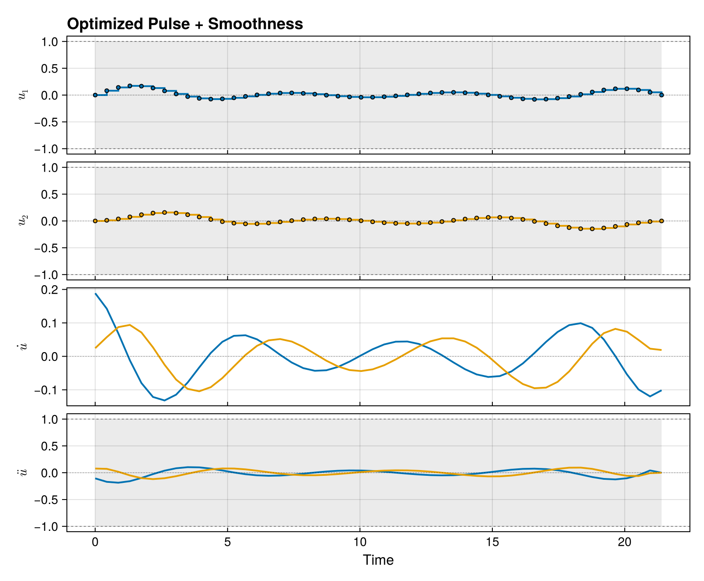
Manual extract + plot
If you need to manipulate the pulse before plotting (e.g. resample, convert to a different pulse type), reconstruct it explicitly. The higher-level plot_pulse(qcp; ...) calls do this internally.
optimized_traj = get_trajectory(qcp)
optimized_pulse = ZeroOrderPulse(optimized_traj)
fig = plot_pulse(optimized_pulse; title = "Optimized Pulse")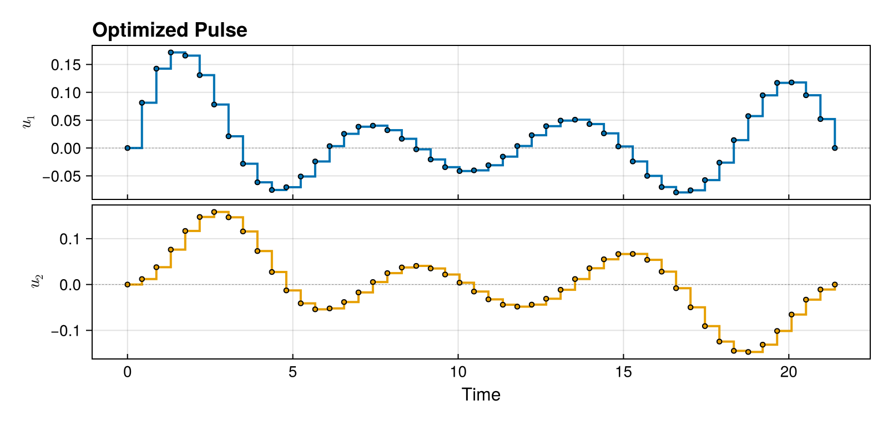
Pulse animation
animate_pulse turns a vector of pulses into a parameter sweep animation. This is useful when comparing candidate pulses from a scan or showing how a waveform responds to parameter changes. Use mode = :record with CairoMakie for documentation-friendly .gif or .mp4 output:
amplitudes = collect(range(0.2, 1.0, length = 24))
pulse_sweep =
[GaussianPulse([amp, 0.5 * amp], 1.0, T; center = T / 2) for amp in amplitudes]
animate_pulse(
pulse_sweep;
mode = :record,
filename = "pulse_parameter_sweep.gif",
fps = 12,
parameter_values = amplitudes,
parameter_label = "amplitude",
title = "Gaussian pulse sweep",
)Basic Trajectory Plotting
The plot function from NamedTrajectories.jl plots trajectory components directly. This is useful for inspecting the raw optimization state, but it is not a faithful picture of the pulse you'll actually play on hardware.
Plot Controls
plot(traj, [:u]) draws the optimization variable:u as a line plot between knot points. The pulse that physics actually sees is determined by the pulse type you chose (e.g. zero-order hold, linear spline, cubic spline) — plot(traj, [:u]) doesn't know about that and won't reflect the inter-knot shape. For ZeroOrderPulse the difference is a stair vs. a line; for spline pulses it's the difference between control samples and the smooth waveform between them.
Unless you are specifically debugging the optimizer state, prefer plot_pulse — it reconstructs the pulse from the trajectory using the correct pulse type and renders the actual waveform.
traj = get_trajectory(qcp)
fig = plot(traj, [:u])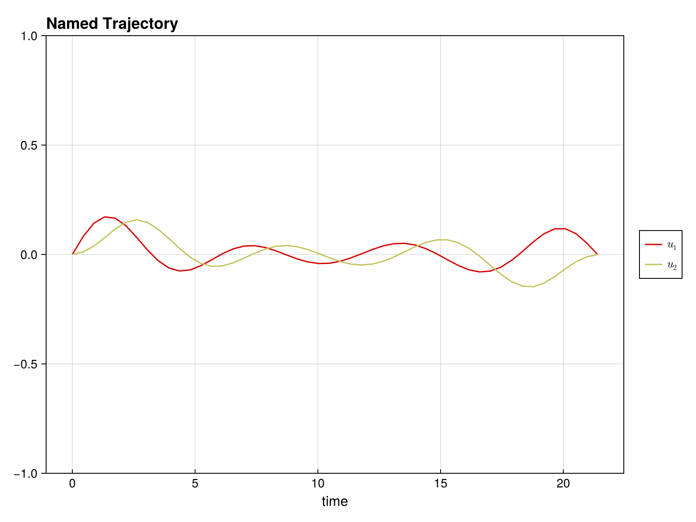
Plot Controls and Derivatives
fig = plot(traj, [:u, :du, :ddu])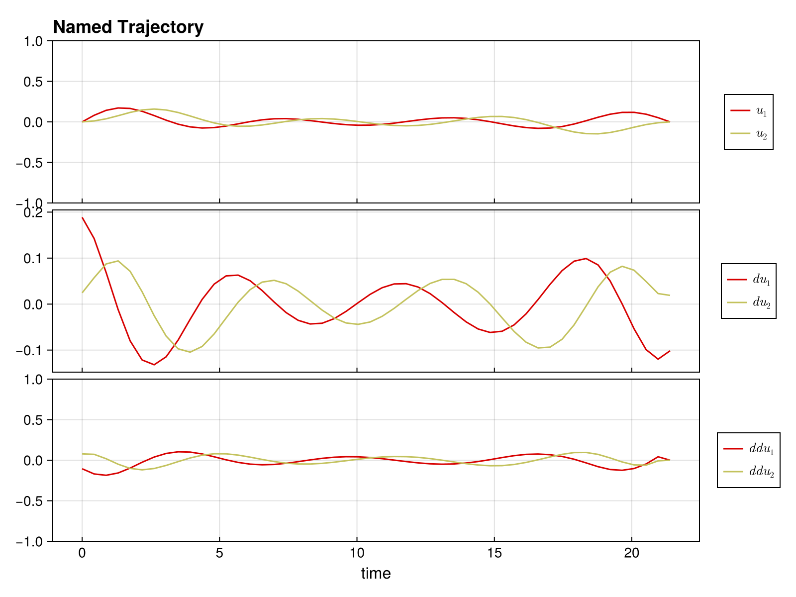
Quantum-Specific Plots
Unitary Populations
For UnitaryTrajectory, visualize how state populations evolve during the gate:
fig = plot_unitary_populations(traj)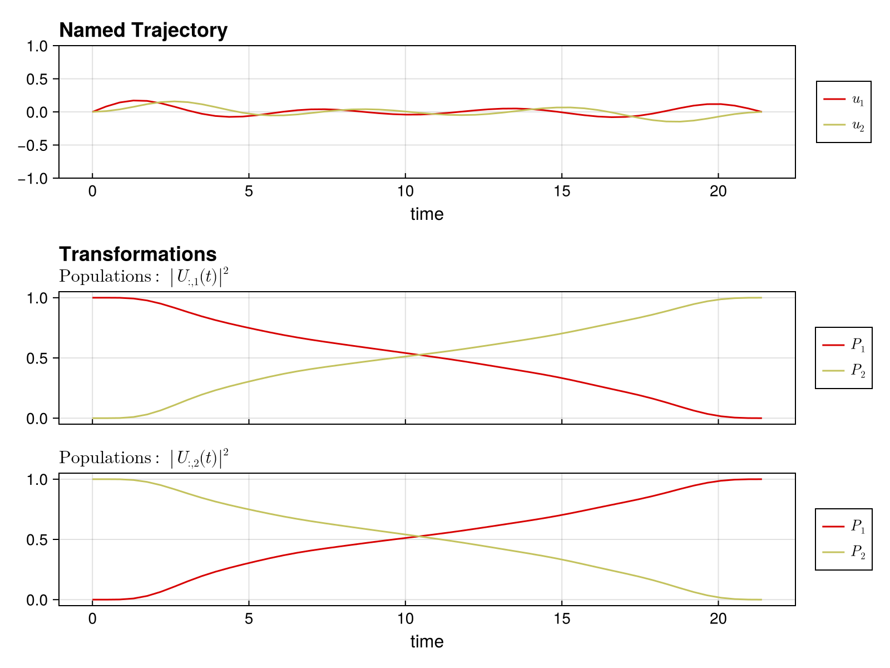
Ket State Populations
For KetTrajectory, use plot_state_populations. Set up and solve a |0⟩ → |1⟩ transfer on the same sys. As in the unitary example above, pin the time grid with timesteps_all_equal = true so the population plot has a uniform time axis:
ψ_init = ComplexF64[1.0, 0.0]
ψ_goal = ComplexF64[0.0, 1.0]
pulse_ket = ZeroOrderPulse(0.1 * randn(2, N), times)
qtraj_ket = KetTrajectory(sys, pulse_ket, ψ_init, ψ_goal)
qcp_ket = SmoothPulseProblem(
qtraj_ket,
N;
Q = 100.0,
R = 1e-2,
ddu_bound = 1.0,
piccolo_options = PiccoloOptions(timesteps_all_equal = true, verbose = false),
)
solve!(qcp_ket; max_iter = 50, print_level = 1)┌ Warning: Trajectory has timestep variable :Δt but no bounds on it.
│ Adding default lower bound of 0 to prevent negative timesteps.
│
│ Recommended: Add explicit bounds when creating the trajectory:
│ NamedTrajectory(...; Δt_bounds=(min, max))
│ Example:
│ NamedTrajectory(qtraj, N; Δt_bounds=(1e-3, 0.5))
│
│ Or use timesteps_all_equal=true in problem options to fix timesteps.
└ @ DirectTrajOpt.Problems ~/.julia/packages/DirectTrajOpt/KFMSZ/src/problems.jl:66
[ Info: Saved cache to visualization_ket_aebfab3.jld2Plot the populations:
traj_ket = get_trajectory(qcp_ket)
fig = plot_state_populations(traj_ket)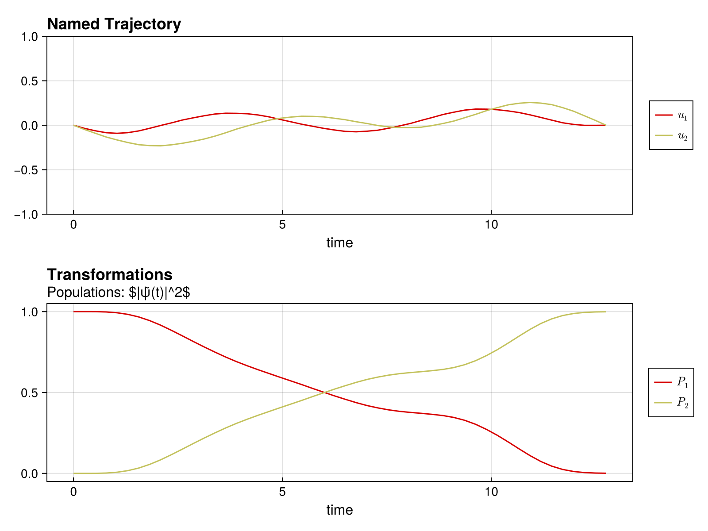
Bloch Sphere Visualization
When QuantumToolbox.jl is loaded, plot_bloch renders a two-level state trajectory on the Bloch sphere. The path connects the Bloch vector at every timestep; pass index=k to also drop a vector arrow at frame k.
using QuantumToolbox
fig = plot_bloch(traj_ket)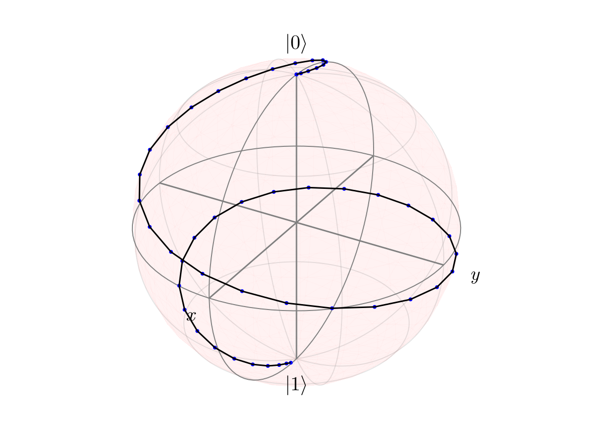
Show a vector arrow at a specific timestep:
fig = plot_bloch(traj_ket; index = N)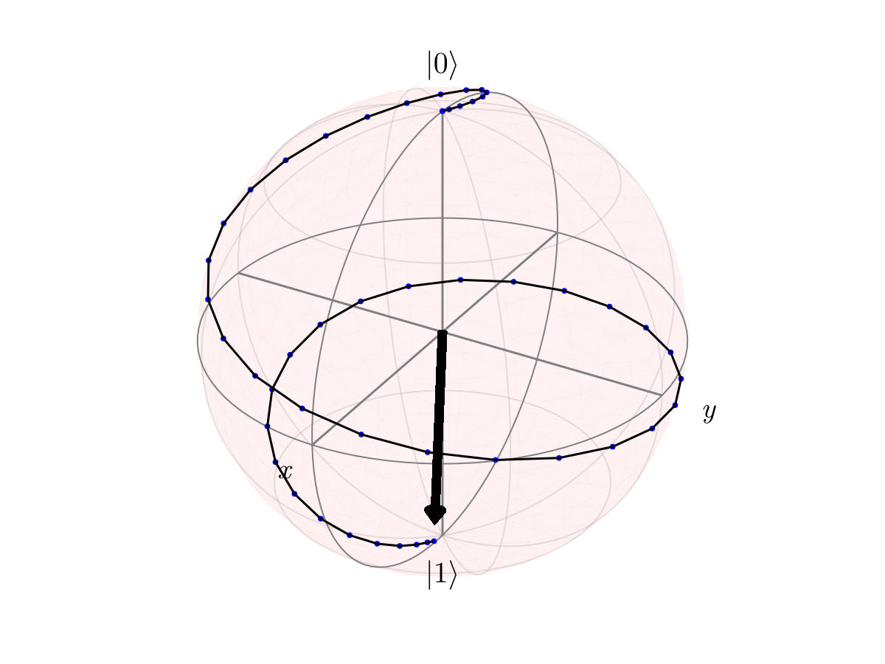
For multi-level systems, restrict to the qubit subspace via subspace=1:2. For density-matrix trajectories, pass state_name=:ρ̃⃗, state_type=:density.
Wigner Function Visualization
For bosonic / oscillator systems, plot_wigner(traj, idx) renders the Wigner quasi-probability distribution at a chosen timestep. To keep this guide fast we build a small synthetic trajectory of coherent states rotating in phase space — no solver involved — to illustrate the call:
dim_cavity = 20
N_cav = 30
ω_cav = 2π
times_cav = range(0, 2π / ω_cav, length = N_cav)
cavity_kets = [coherent(dim_cavity, 1.5 * exp(im * ω_cav * t)).data for t in times_cav]
traj_cavity = NamedTrajectory((
ψ̃ = hcat(ket_to_iso.(cavity_kets)...),
Δt = fill(step(times_cav), N_cav),
),)
fig = plot_wigner(traj_cavity, 1; xvec = -3:0.1:3, yvec = -3:0.1:3)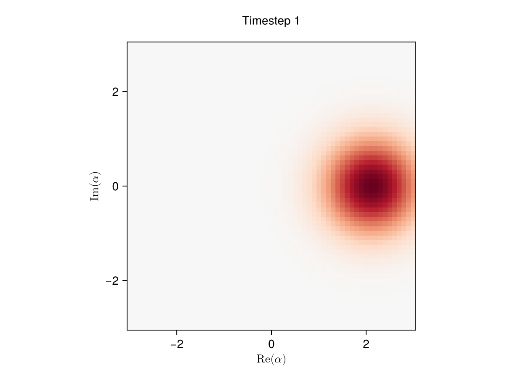
A single static frame can't show the orbital motion (the coherent state at t = 0 and t = 2π/ω_cav sits at the same phase-space point). Use animate_wigner with mode = :record to write a .gif next to the generated page and embed it. Interactive :inline playback requires GLMakie, which the docs build doesn't load.
animate_wigner(
traj_cavity;
mode = :record,
filename = "wigner_cavity.gif",
fps = 12,
xvec = -3:0.1:3,
yvec = -3:0.1:3,
)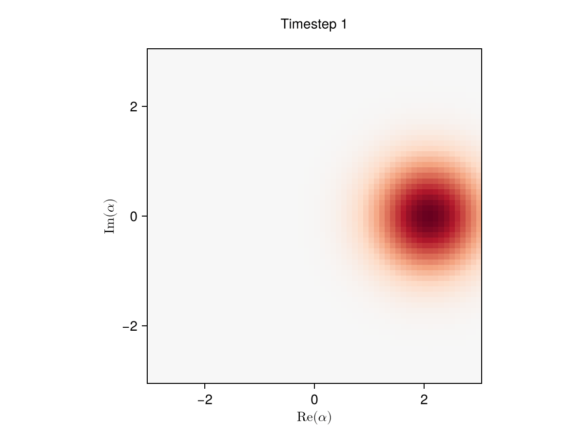
Bloch evolution can be animated the same way with animate_bloch(traj_ket; mode = :record, filename = "bloch.gif").
IQ pairs (plot_pulse_IQ)
For 4-drive pulses interpreted as two IQ pairs — drive (ΩI, ΩQ) and displacement (αI, αQ) — plot_pulse_IQ renders each pair on its own row along with the magnitude envelope. Typical view for cat-qubit / oscillator control where both the drive and displacement are complex-valued.
T_iq = 50.0
Ω_max = 0.5
α_max = 0.3
σ = T_iq / 6
pulse_iq = GaussianPulse([Ω_max, 0.7 * Ω_max, α_max, 0.7 * α_max], σ, T_iq)
fig = plot_pulse_IQ(pulse_iq; title = "IQ view (Ω, α)")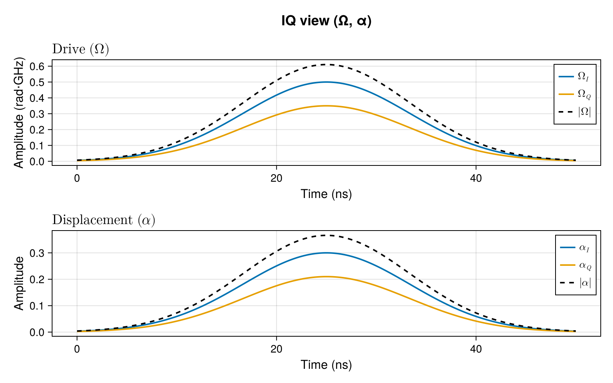
Magnitude + phase (plot_pulse_phases)
Same 4-drive structure, polar form: magnitude and unwrapped phase for the drive on the top row, displacement on the bottom row. Phase is masked to NaN wherever the corresponding amplitude is below 1% of its peak (configurable via phase_threshold) since atan(Q, I) is numerically meaningless in the near-zero region.
fig = plot_pulse_phases(pulse_iq; title = "Polar view (|·|, ∠·)")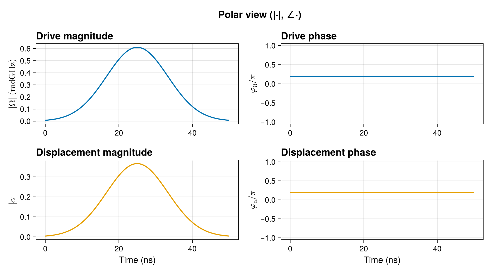
Pulse Animations
animate_pulse shows a pulse drawing itself over time. Rendering delegates to plot_pulse!, so each pulse type animates with its native primitive — a faint ghost of the full pulse sits behind a curve that reveals up to a moving playhead. Use mode = :record with CairoMakie to write a .gif/.mp4 (as below); use mode = :inline with GLMakie for a looping interactive preview.
A ZeroOrderPulse animates as stairs (step-and-hold):
zoh_times = collect(range(0, T, length = 12))
zoh_controls = vcat(
permutedims(0.6 .* sin.(2π .* zoh_times ./ T)),
permutedims(0.4 .* cos.(2π .* zoh_times ./ T)),
)
zoh_pulse = ZeroOrderPulse(zoh_controls, zoh_times)
animate_pulse(
zoh_pulse;
mode = :record,
filename = "pulse_zoh.gif",
fps = 24,
n_samples = 80,
labels = ["Ω_x", "Ω_y"],
title = "ZeroOrderPulse",
)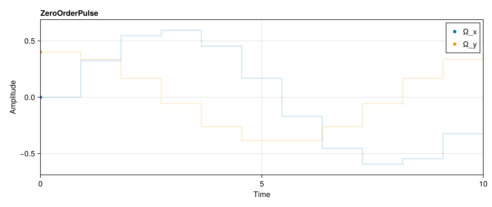
A CubicSplinePulse animates as a smooth curve through its knots — same call, different pulse type, correct primitive chosen automatically:
cubic_times = collect(range(0, T, length = 9))
cubic_controls = vcat(
permutedims(0.5 .* sin.(2π .* cubic_times ./ T)),
permutedims(0.3 .* cos.(π .* cubic_times ./ T)),
)
cubic_pulse = CubicSplinePulse(cubic_controls, cubic_times)
animate_pulse(
cubic_pulse;
mode = :record,
filename = "pulse_cubic.gif",
fps = 24,
n_samples = 80,
labels = ["Ω_x", "Ω_y"],
title = "CubicSplinePulse",
)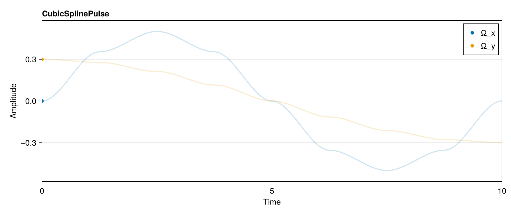
You can add state or population traces in a second panel by passing a matrix whose rows are populations and whose columns are time samples — useful for showing the control pulse and the quantum response in one animation:
animation_pulse = GaussianPulse([0.8, 0.45], T / 6, T)
population_times = collect(range(0, T, length = 80))
population_trace = vcat(
permutedims(cos.(π .* population_times ./ (2T)) .^ 2),
permutedims(sin.(π .* population_times ./ (2T)) .^ 2),
)
animate_pulse(
animation_pulse;
mode = :record,
filename = "pulse_populations.gif",
fps = 24,
n_samples = 80,
labels = ["Ω_x", "Ω_y"],
populations = population_trace,
population_times,
population_labels = ["|0⟩", "|1⟩"],
title = "Pulse with population evolution",
)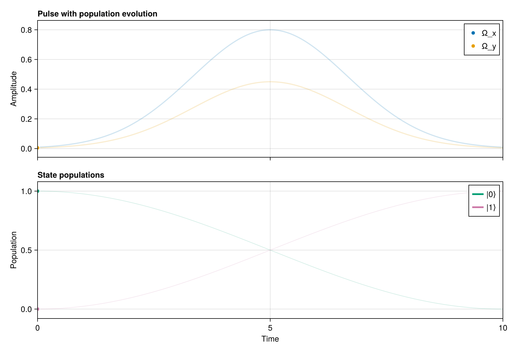
Custom Plotting
For full control, extract trajectory data and use Makie directly.
Manual Control Plots
plot_times = cumsum([0; get_timesteps(traj)])[1:(end-1)]
fig = Figure(size = (800, 400))
ax = Axis(fig[1, 1], xlabel = "Time", ylabel = "Control Amplitude")
for i = 1:size(traj[:u], 1)
lines!(ax, plot_times, traj[:u][i, :], label = "Drive $i", linewidth = 2)
end
axislegend(ax, position = :rt)
fig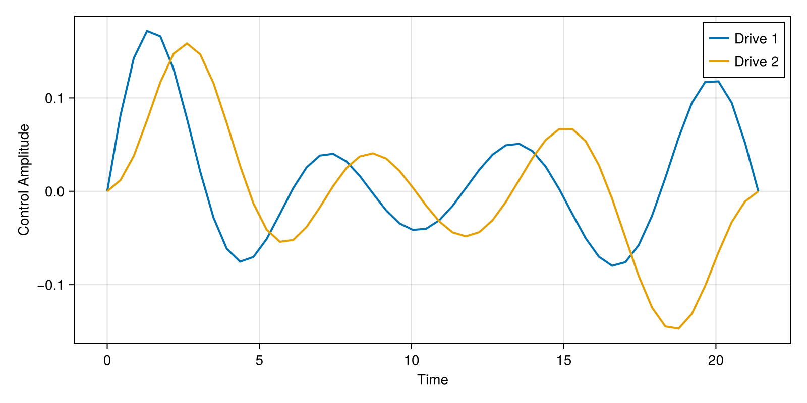
Subplot Layouts
fig = Figure(size = (1000, 500))
# Controls
ax1 = Axis(fig[1, 1], xlabel = "Time", ylabel = "Amplitude", title = "Controls")
lines!(ax1, plot_times, traj[:u][1, :], label = "u_x", linewidth = 2)
lines!(ax1, plot_times, traj[:u][2, :], label = "u_y", linewidth = 2)
axislegend(ax1, position = :rt)
# Derivatives
ax2 = Axis(fig[1, 2], xlabel = "Time", ylabel = "Derivative", title = "Control Derivatives")
lines!(ax2, plot_times, traj[:du][1, :], label = "du_x", linewidth = 2)
lines!(ax2, plot_times, traj[:du][2, :], label = "du_y", linewidth = 2)
axislegend(ax2, position = :rt)
fig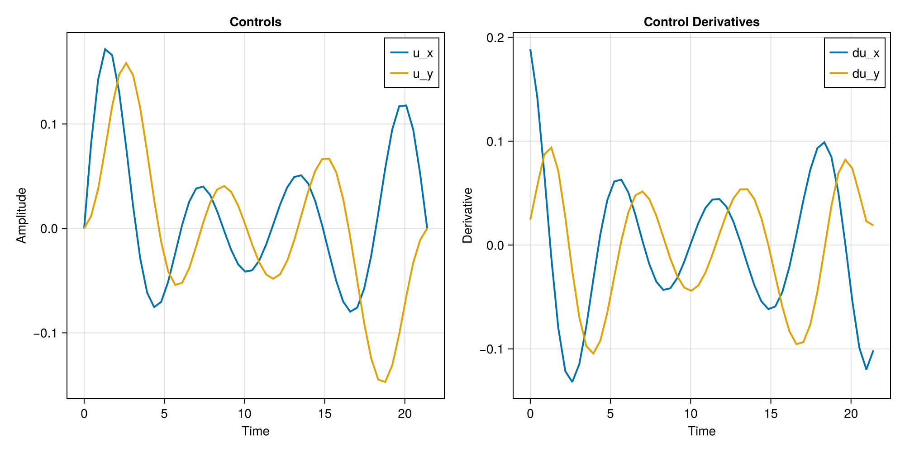
Phase Space Plot
fig = Figure(size = (500, 500))
ax = Axis(fig[1, 1], xlabel = "u_x", ylabel = "u_y", title = "Control Phase Space")
lines!(ax, traj[:u][1, :], traj[:u][2, :], linewidth = 2)
scatter!(
ax,
[traj[:u][1, 1]],
[traj[:u][2, 1]],
color = :green,
markersize = 15,
label = "Start",
)
scatter!(
ax,
[traj[:u][1, end]],
[traj[:u][2, end]],
color = :red,
markersize = 15,
label = "End",
)
axislegend(ax, position = :rt)
fig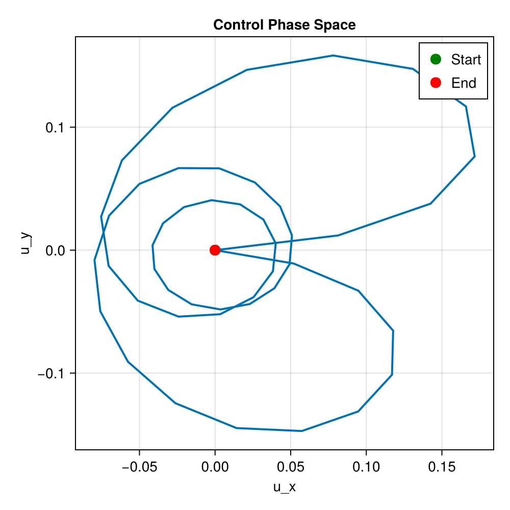
Fidelity Evolution
Track fidelity during the pulse:
using LinearAlgebra
U_goal = GATES[:X]
fidelities = Float64[]
for k = 1:size(traj[:Ũ⃗], 2)
U_k = iso_vec_to_operator(traj[:Ũ⃗][:, k])
F_k = abs(tr(U_goal' * U_k))^2 / sys.levels^2
push!(fidelities, F_k)
end
fig = Figure(size = (800, 300))
ax = Axis(fig[1, 1], xlabel = "Timestep", ylabel = "Fidelity")
lines!(ax, 1:length(fidelities), fidelities, linewidth = 2)
hlines!(ax, [0.99], color = :red, linestyle = :dash, label = "99% target")
axislegend(ax, position = :rb)
fig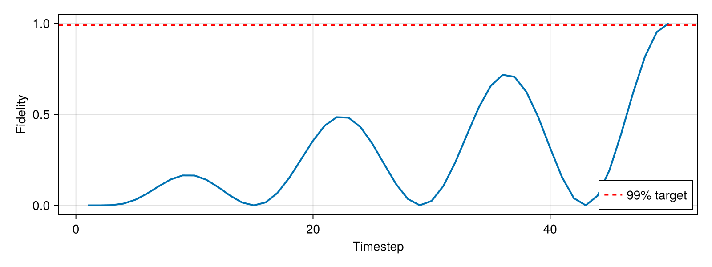
Comparing Solutions
Compare solutions with different regularization weights:
fig = Figure(size = (800, 400))
ax = Axis(fig[1, 1], xlabel = "Time", ylabel = "u_x", title = "Effect of Regularization")
for (R, label) in [(1e-3, "R=1e-3"), (1e-2, "R=1e-2"), (1e-1, "R=1e-1")]
pulse_r = ZeroOrderPulse(0.1 * randn(2, N), times)
qtraj_r = UnitaryTrajectory(sys, pulse_r, GATES[:X])
qcp_r = SmoothPulseProblem(qtraj_r, N; Q = 100.0, R = R, ddu_bound = 1.0)
solve!(
qcp_r;
max_iter = 50,
verbose = false,
print_level = 1,
)
traj_r = get_trajectory(qcp_r)
t_r = cumsum([0; get_timesteps(traj_r)])[1:(end-1)]
lines!(ax, t_r, traj_r[:u][1, :], label = label, linewidth = 2)
end
axislegend(ax, position = :rt)
fig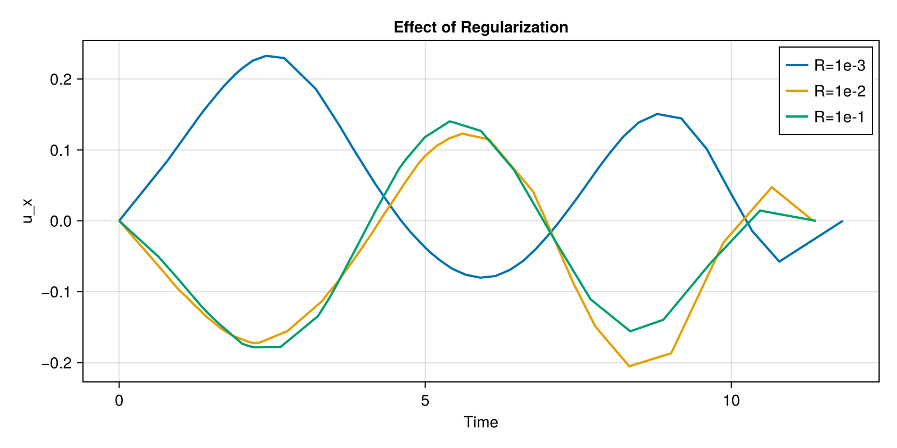
Saving Figures
# PNG (raster)
# save("controls.png", fig)
# PDF (vector graphics)
# save("controls.pdf", fig)
# SVG (vector graphics)
# save("controls.svg", fig)Plotting Tips
1. Use Appropriate Resolution
For publications, use high-res settings:
fig_hires = Figure(size = (1200, 800), fontsize = 14)
2. Use Consistent Colors
colors = Makie.wong_colors()" />
<path d="M1,0v1h-1z" fill="%230072B2" />
<path d="M0,0h1v1h-1z" fill="%230072B2" fill-opacity="1" />
<path d="M2,0v1h-1z" fill="%23E69F00" />
<path d="M1,0h1v1h-1z" fill="%23E69F00" fill-opacity="1" />
<path d="M3,0v1h-1z" fill="%23009E73" />
<path d="M2,0h1v1h-1z" fill="%23009E73" fill-opacity="1" />
<path d="M4,0v1h-1z" fill="%23CC79A7" />
<path d="M3,0h1v1h-1z" fill="%23CC79A7" fill-opacity="1" />
<path d="M5,0v1h-1z" fill="%2356B4E9" />
<path d="M4,0h1v1h-1z" fill="%2356B4E9" fill-opacity="1" />
<path d="M6,0v1h-1z" fill="%23D55E00" />
<path d="M5,0h1v1h-1z" fill="%23D55E00" fill-opacity="1" />
<path d="M7,0v1h-1z" fill="%23F0E442" />
<path d="M6,0h1v1h-1z" fill="%23F0E442" fill-opacity="1" />
</svg>)
3. Show Drive Bounds
bound = 1.0
fig = Figure(size = (800, 300))
ax = Axis(fig[1, 1], xlabel = "Time", ylabel = "Amplitude")
band!(
ax,
plot_times,
-bound * ones(length(plot_times)),
bound * ones(length(plot_times)),
color = (:gray, 0.2),
label = "Bounds",
)
lines!(ax, plot_times, traj[:u][1, :], label = "u_x", linewidth = 2)
axislegend(ax, position = :rt)
fig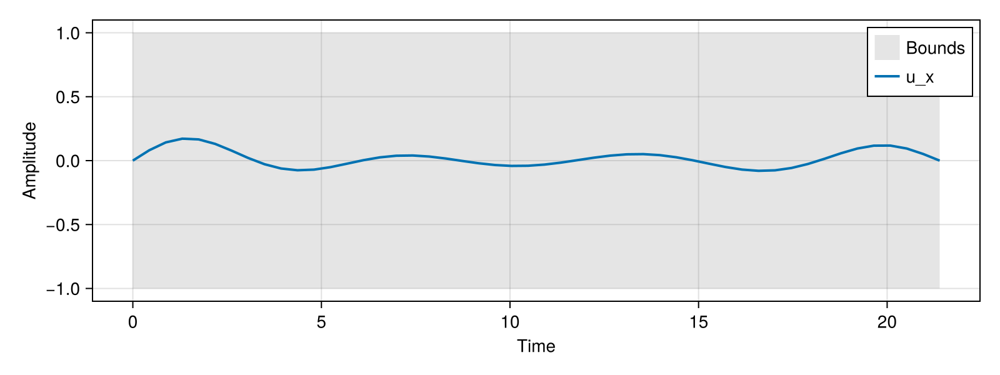
See Also
- Visualizations API - Complete API reference
- Problem Templates - Generating solutions to plot
- Trajectories - Understanding trajectory structure
This page was generated using Literate.jl.